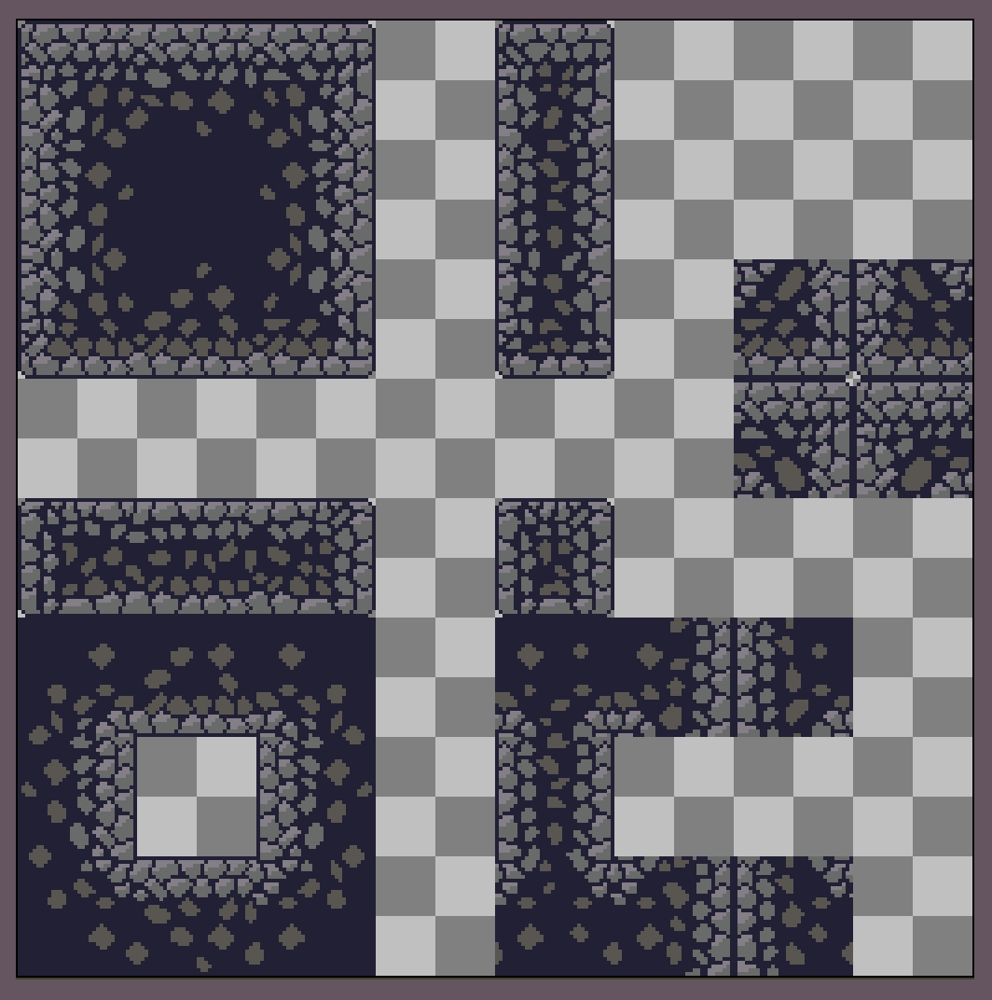
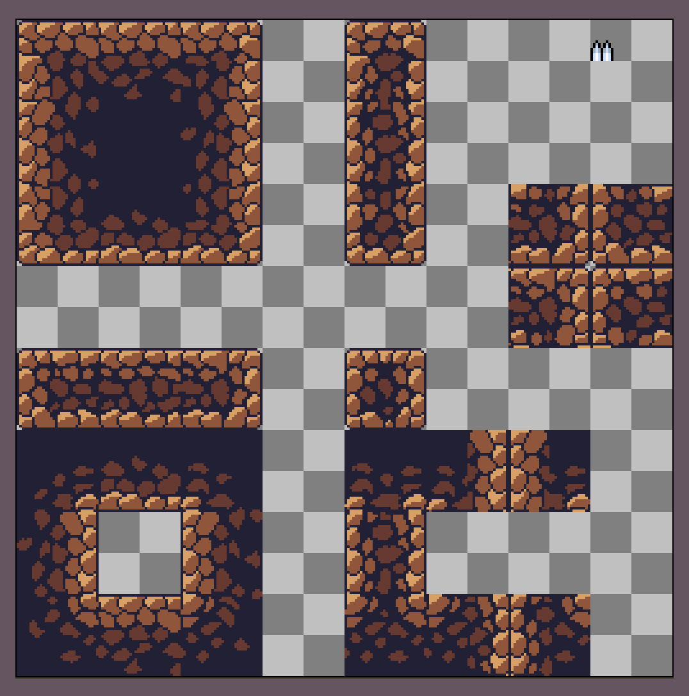

Assets
Creating assets for a game has more to do with the creativity of the developer than their abilities to game develope. When creating assets, really just let your artistic side get the better of you! There's no right or wrong when it comes to game assets, and mistakes can really be played off as an artistic desision.
What is a spritesheet? Simply put, it's the foundation or building blocks of creating your game. As you can see, looking at a sprite sheet doesn't really look like much and honestly resembles more of a failed art project than anything else. But when you start putting things together peace by peace, a simple but well developed spritesheet is the beginning of an exeptional in-game terrain or player animation. Start by asking yourself what you want your game to look like. Where does it take place? What's the mood? Is this for a simple npc conversation or a boss fight? What do you want your player to focus on? Shown is an example of a stone and dirt spritesheet that is being used for an underground cave setting.
Most of the assets for "Regret" will be made with pixel art. There are many ways to draw or animate your characters, including photoshop, pixel art, or any other perfered alternative. We'll focus mostly on pixel art, a common choice ammong indi-game developers. For "Regret," will be using Aseprite for our pixeled spritesheet and Krita for our non-pixeled spritesheets.
